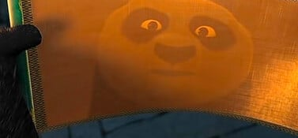
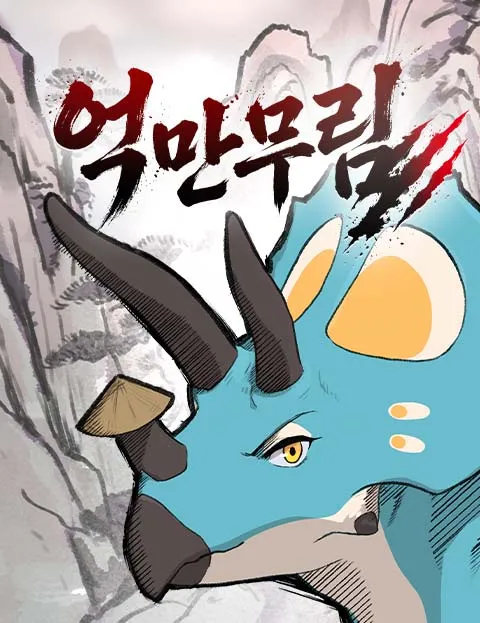
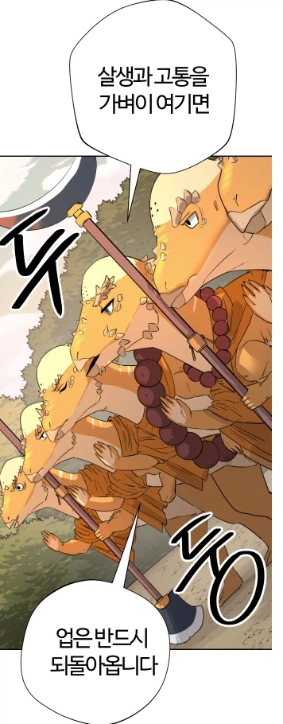
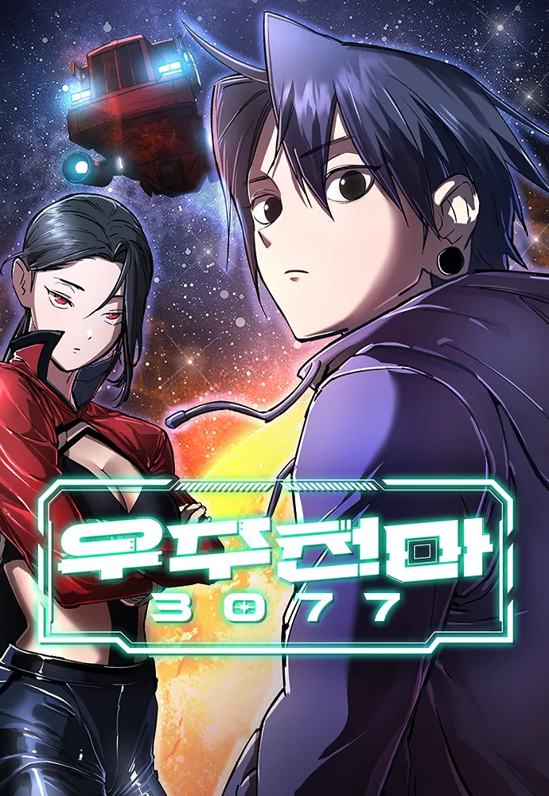
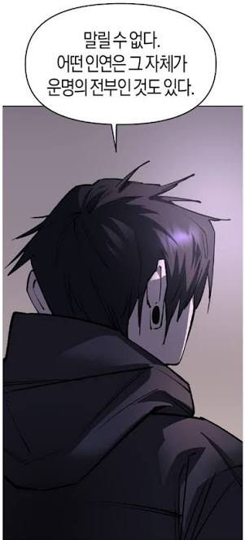
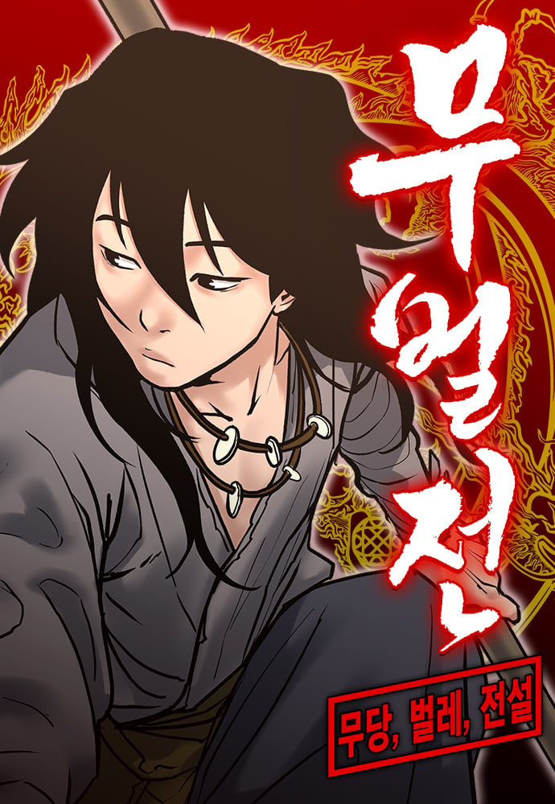
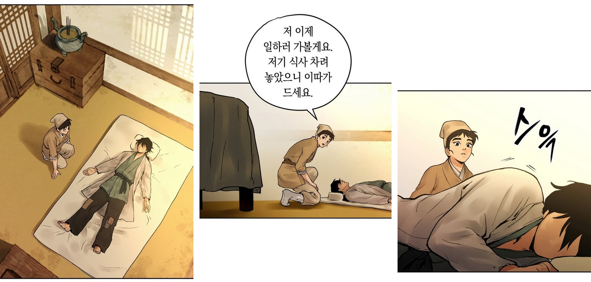
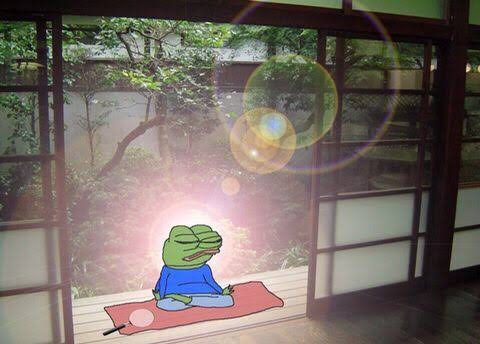

쿵푸팬더

"용문서의 힘은 이제 내 것이다... 백지잖아?"
"비법도 비밀 재료도 없어. 중요한 건 자신이야"

억만무림

"오늘 내가 저 자를 살려주고, 내일 저 자의 칼에 힘없는 누군가가 죽는다면 그 죽음에는 오늘 칼을 거둔 내 책임도 있소. 협이란 눈 앞의 한 사람만 살피는 일이 아닌 것이오"
"...아직 일어나지도 않은 일까지 베어버리는 게 협이라면, 그 칼은 어디에서 멈춥니까?"

우주천마3077

"가지고 있거라"
"쓰지 않을 거예요. 영원히"
"못 쓰는 거와 쓰지 않는 건 다르다. 정말 쓰지 않으려면 가지고 있어야 한다"

무벌전

"...정말 한 번도 향로의 불씨가 꺼진 적이 없나요?"
"허허, 우리 석현이가 아주 예리한 질문을 하는구나. 실은, 내가 어릴 때 늦잠을 자는 바람에 저 불씨가 꺼진 적이 있었단다"
"예?"
"장문인께 불려간 나는 크게 혼이 날 거라 생각했지. 하지만 장문인께선 '사실 나도 어릴 때 꺼뜨린 적 있다'며 웃으시더구나"
"...이상한데요 그건. 그래도 되는 건가요?"
"하하, 일부러 그러면 당연히 안 되지. 사람이 하는 일인데 어찌 실수가 없겠느냐. 한 번도 불씨가 꺼진 적이 없다는 건 상징적인 의미란다. 우리가 선현들의 뜻을 일구월심으로 이어가고 또 발전시킨다면, 무당의 혼 또한 영원히 죽지 않고 전해지는 것이다. 하지만 우리가 무당의 가르침을 잊고 타락한다면 그때야말로 무당의 혼은 죽는 것이지. 그때에 가서는 저 향로에 아무리 불씨가 타오르고 있어도 그 불은 꺼진 것과 마찬가지다"

주인공이 동물이어도
시대가 1억년 전이어도
장소가 우주여도
MMA를 사용해도
그 안에 협이 있다면
하는 일마다 협행이고
가는 곳마다 무림이며
배우는 기술마다 무공이거늘
무엇을 고민하느냐
웹툰작가 뭔일 있음?